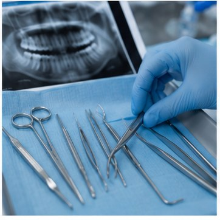

DENTAL EDUCATION • PUNE
Wisdom Teeth: Pain, Problems & Removal
Wisdom teeth can remain symptom-free, but impacted or partially erupted teeth may cause pain, inflammation, decay or food trapping.

Common wisdom-tooth problems
Discuss this aspect with your dentist because the appropriate advice depends on your oral health, clinical findings and treatment goals. A personalised examination can identify factors that cannot be assessed from symptoms alone.
When imaging may be recommended
Discuss this aspect with your dentist because the appropriate advice depends on your oral health, clinical findings and treatment goals. A personalised examination can identify factors that cannot be assessed from symptoms alone.
When removal may be considered
Discuss this aspect with your dentist because the appropriate advice depends on your oral health, clinical findings and treatment goals. A personalised examination can identify factors that cannot be assessed from symptoms alone.
Recovery basics
Discuss this aspect with your dentist because the appropriate advice depends on your oral health, clinical findings and treatment goals. A personalised examination can identify factors that cannot be assessed from symptoms alone.
When swelling or pain needs urgent attention
Discuss this aspect with your dentist because the appropriate advice depends on your oral health, clinical findings and treatment goals. A personalised examination can identify factors that cannot be assessed from symptoms alone.
Explore the related Amayra service
LOCAL DENTAL CARE
Need an Individual Assessment?
Amayra Polyclinic & Dental Hub is near Amanora & Magarpatta, Pune 411028.